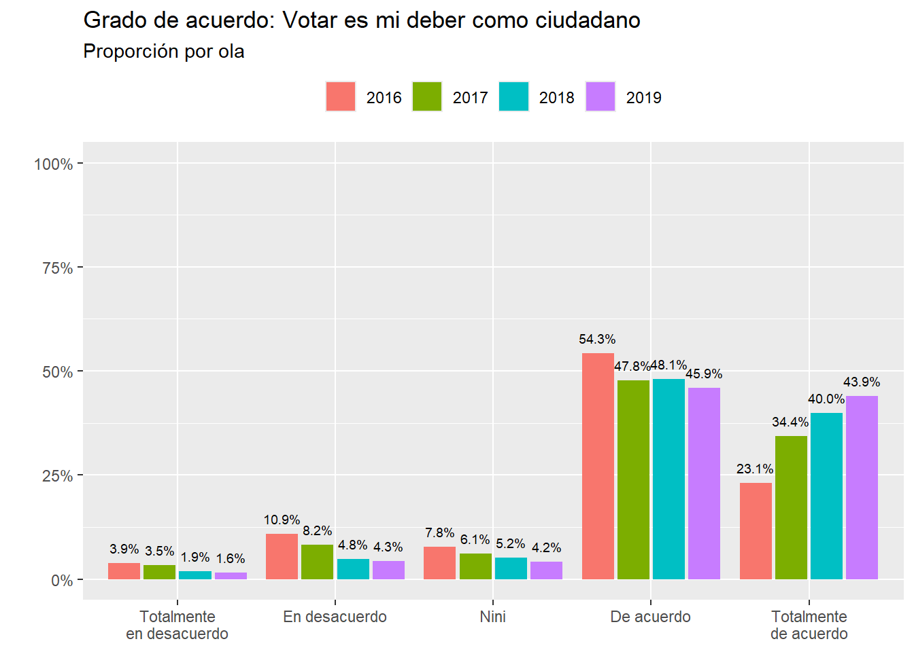
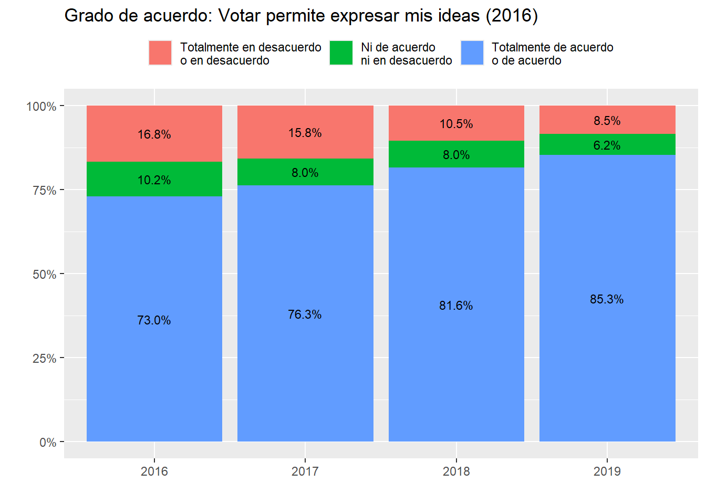
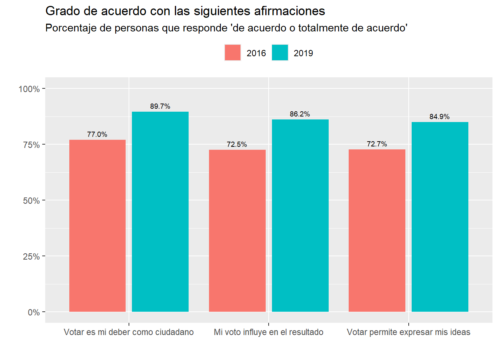

library(tidyverse) #manejo y visualización de datos
── Attaching core tidyverse packages ──────────────────────── tidyverse 2.0.0 ──
✔ dplyr 1.1.4 ✔ readr 2.1.6
✔ forcats 1.0.1 ✔ stringr 1.6.0
✔ ggplot2 4.0.1 ✔ tibble 3.3.1
✔ lubridate 1.9.4 ✔ tidyr 1.3.2
✔ purrr 1.2.1
── Conflicts ────────────────────────────────────────── tidyverse_conflicts() ──
✖ dplyr::filter() masks stats::filter()
✖ dplyr::lag() masks stats::lag()
ℹ Use the conflicted package (<http://conflicted.r-lib.org/>) to force all conflicts to become errors
library(sjlabelled) #manejo de etiquetas
Adjuntando el paquete: 'sjlabelled'
The following object is masked from 'package:forcats':
as_factor
The following object is masked from 'package:dplyr':
as_label
The following object is masked from 'package:ggplot2':
as_label
library(sjmisc) # manejo de datos (sólo usaremos frq)
Adjuntando el paquete: 'sjmisc'
The following object is masked from 'package:purrr':
is_empty
The following object is masked from 'package:tidyr':
replace_na
The following object is masked from 'package:tibble':
add_case
library(panelr) # manejo de datos panel
Warning: package 'panelr' was built under R version 4.5.3
Cargando paquete requerido: lme4
Cargando paquete requerido: Matrix
Adjuntando el paquete: 'Matrix'
The following objects are masked from 'package:tidyr':
expand, pack, unpack
Adjuntando el paquete: 'panelr'
The following object is masked from 'package:stats':
filter
elsoc_wide <- elsoc_wide_2016_2019 %>%filter(tipo_atricion ==1& tipo_caso %in%c(0,1)) #filtrar atrición entre 2016-19 y casos c/inconsistencias mayores# Alternativamente: tipo_caso %in% 0:1 ó tipo_caso != 2
Transformar base de datos de wide a long
elsoc_long <-long_panel(data = elsoc_wide, #base de datos formato wideprefix ="_w0", #caracteres antes de la etiqueta de cada olabegin =1, #etiqueta de la primera olaend =4, #etiqueta de la última olalabel_location ="end", #indica donde se localiza la etiqueta asociada a la ola id ="idencuesta", #indica identificador individualwave ="ola") #nombre que tomará la variable que indica periodo. elsoc_long[elsoc_long ==-999| elsoc_long ==-888] <-NA#recodificar No sabe y No responde en NAelsoc_long <- elsoc_long %>%mutate(ola =factor(ola, labels =c("2016", "2017", "2018", "2019")))#save(elsoc_long, file = "1_datos/elsoc-long.RData")#load("1_datos/elsoc-long.RData") #alternativamente cargar esta base que ya contiene las transformaciones antes descritas
Grado de acuerdo: Votar es mi deber como ciudadano (2016) (x) <numeric>
# total N=7544 valid N=7519 mean=4.07 sd=0.97
Value | Label | N | Raw % | Valid % | Cum. %
------------------------------------------------------------------------
-999 | No Responde (no leer) | 0 | 0.00 | 0.00 | 0.00
-888 | No Sabe (no leer) | 0 | 0.00 | 0.00 | 0.00
1 | Totalmente en desacuerdo | 205 | 2.72 | 2.73 | 2.73
2 | En desacuerdo | 531 | 7.04 | 7.06 | 9.79
3 | Ni de acuerdo ni en desacuerdo | 439 | 5.82 | 5.84 | 15.63
4 | De acuerdo | 3685 | 48.85 | 49.01 | 64.64
5 | Totalmente de acuerdo | 2659 | 35.25 | 35.36 | 100.00
<NA> | <NA> | 25 | 0.33 | <NA> | <NA>
elsoc_long %>%ungroup() %>%# desagrupa si es que hay alguna variable de desagrupacióncount(ola, c10_01) %>%# contar combinaciones entre variables de interésdrop_na() %>%# desecha NA para mejorar visualizacióngroup_by(ola) %>%# agrupa por olamutate(freq = (n/sum(n))) %>%# calcula frecuencia por ola#as_label(c10_01) %>% # variables toman los valores de su etiqueta mutate(c10_01 =factor(c10_01, labels =c("Totalmente\nen desacuerdo", "En desacuerdo", "Nini", "De acuerdo","Totalmente\nde acuerdo"))) %>%# desde aquí ya deja de ser una BBDD, pasa a ser una lista que contiene un gráficoggplot(aes(x = c10_01, y = freq,fill = ola,label =as.character(scales::percent(freq, accuracy = .1)))) +geom_col(position ='dodge2') +geom_text(position =position_dodge(width = .9),size =2.5,vjust =-1) +scale_y_continuous(labels = scales::percent,limits =c(0, 1)) +theme(legend.position ='top',legend.title =element_blank()) +labs(title ="Grado de acuerdo: Votar es mi deber como ciudadano",subtitle ="Proporción por ola",x =NULL,y ="")

Gráfico de barra apilada
frq(elsoc_long$c10_01)
Grado de acuerdo: Votar es mi deber como ciudadano (2016) (x) <numeric>
# total N=7544 valid N=7519 mean=4.07 sd=0.97
Value | Label | N | Raw % | Valid % | Cum. %
------------------------------------------------------------------------
-999 | No Responde (no leer) | 0 | 0.00 | 0.00 | 0.00
-888 | No Sabe (no leer) | 0 | 0.00 | 0.00 | 0.00
1 | Totalmente en desacuerdo | 205 | 2.72 | 2.73 | 2.73
2 | En desacuerdo | 531 | 7.04 | 7.06 | 9.79
3 | Ni de acuerdo ni en desacuerdo | 439 | 5.82 | 5.84 | 15.63
4 | De acuerdo | 3685 | 48.85 | 49.01 | 64.64
5 | Totalmente de acuerdo | 2659 | 35.25 | 35.36 | 100.00
<NA> | <NA> | 25 | 0.33 | <NA> | <NA>
elsoc_long %>%ungroup() %>%mutate(c10_03 =factor(car::recode(c10_03, "c(1,2) = 1; c(3) = 2; c(4,5) = 3"),labels =c("Totalmente en desacuerdo\no en desacuerdo","Ni de acuerdo\nni en desacuerdo","Totalmente de acuerdo\no de acuerdo"))) %>%count(ola, c10_03) %>%drop_na() %>%group_by(ola) %>%mutate(freq = (n/sum(n))) %>%as_label(ola) %>%ggplot(aes(x = ola, y = freq,fill = c10_03,label =as.character(scales::percent(freq, accuracy = .1)))) +geom_col(position ='stack') +geom_text(position =position_stack(vjust = .5),size =3) +labs(title =get_label(elsoc_long$c10_03),x ="",y ="") +scale_y_continuous(labels = scales::percent) +theme(legend.position ='top',legend.title =element_blank())

Gráfico de barra (varios ítems)
elsoc_long %>%ungroup() %>%select(ola, starts_with("c10_")) %>%pivot_longer(cols =starts_with("c10_")) %>%mutate(name =factor(name, labels =c("Votar es mi deber como ciudadano","Mi voto influye en el resultado","Votar permite expresar mis ideas")),value =factor(car::recode(value, "c(1,2) = 1; c(3) = 2; c(4,5) = 3"),labels =c("Totalmente en desacuerdo\no en desacuerdo","Ni de acuerdo\nni en desacuerdo","Totalmente de acuerdo\no de acuerdo"))) %>%count(ola, name, value) %>%group_by(ola, name) %>%mutate(freq = n/sum(n)) %>%drop_na() |>filter(value =="Totalmente de acuerdo\no de acuerdo", ola %in%c("2016", "2019")) %>%ggplot(aes(x = name, y = freq, fill = ola,label = scales::percent(freq, accuracy = .1))) +geom_col(position ='dodge2') +geom_text(position =position_dodge(width = .9),size =2.5,vjust =-0.6) +labs(title ='Grado de acuerdo con las siguientes afirmaciones',subtitle ="Porcentaje de personas que responde 'de acuerdo o totalmente de acuerdo'",x ="",y ="") +scale_y_continuous(labels = scales::percent,limits =c(0, 1)) +theme(legend.position ='top',legend.title =element_blank())

Gráfico de lineas (varios ítems)
elsoc_long %>%ungroup() %>%select(ola, c05_02, c05_03, c05_07, c05_08) %>%pivot_longer(cols =c(c05_02, c05_03, c05_07, c05_08)) %>%mutate(name =factor(name, labels =c("Partidos políticos","Carabineros","Presidente","Congreso nacional")),value =factor(car::recode(value, "c(1,2) = 1; c(3) = 2; c(4,5) = 3"),labels =c("Nada o poca","Algo","Bastante o mucha"))) %>%count(ola, name, value) %>%drop_na() %>%group_by(ola, name) %>%mutate(freq = (n/sum(n))) %>%filter(value %in%c("Nada o poca")) %>%ggplot(aes(x = ola, y = freq, color = name, group = name,label =as.character(scales::percent(freq, accuracy = .1)))) +geom_line(size =1) +geom_point(size =1.5) +geom_text(size =3, color ='black',vjust =-0.8) +labs(title ="Grado de confianza en instituciones",subtitle ="Porcentaje que responde 'Nada o poca' confianza",x ="",y ="") +scale_y_continuous(labels = scales::percent,limits =c(0,1)) +theme(legend.position ='top',legend.title =element_blank())
Warning: Using `size` aesthetic for lines was deprecated in ggplot2 3.4.0.
ℹ Please use `linewidth` instead.